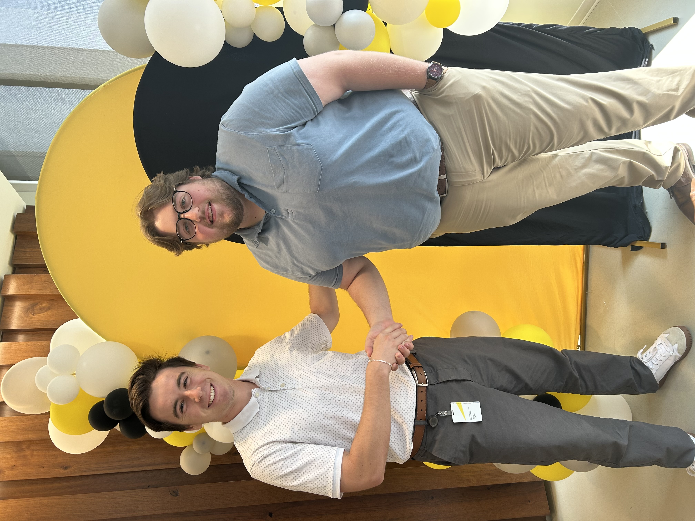
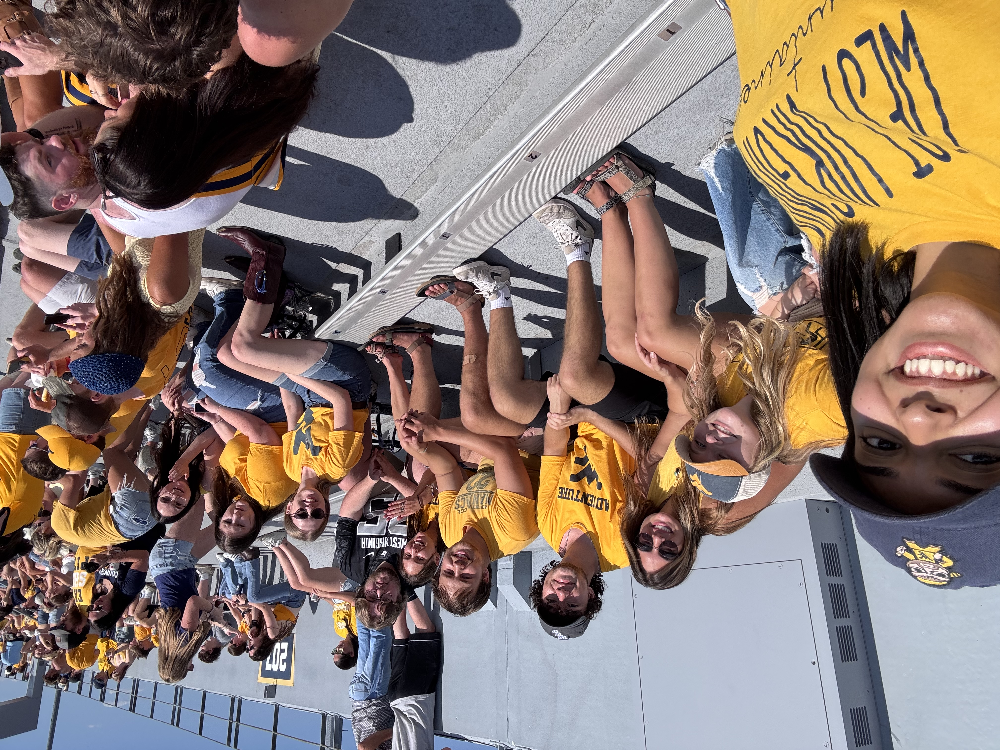
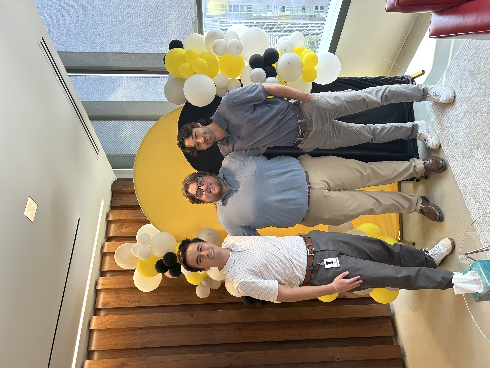

West Virginia University
Management Information Systems major with an Accounting minor and a strong interest in business technology.
Management Information Systems • Accounting Minor
I'm Zachary Holmes, a West Virginia University senior who enjoys turning messy information into clear systems, practical tools, and better decisions. I care about thoughtful execution, strong communication, and work that actually helps people move faster and smarter. Read more →
Building the mix of technical skill, business judgment, and communication needed for strong tech risk and advisory work.
What I bring
I like work that sits between systems, data, and decision-making. That usually means understanding the process first, cleaning up the information, and building something dependable enough that other people can trust it.
Best Fit
I’m especially interested in roles where technology supports stronger controls, better reporting, and more confident business decisions.
Snapshot
Management Information Systems major with an Accounting minor and a strong interest in business technology.
Gained hands-on experience working with controls and documentation while developing strong client-facing and professional communication skills
C#, SQL, HTML, CSS, JavaScript, PowerBI, Excel, and practical data workflows.
AI, audit and tech risk, financial technology, and systems that make information more actionable.
Moments
A few snapshots from the experiences shaping the way I work and the kind of environments I want to keep growing in.



How I work
I like improving the way things are done, especially when better tools or cleaner processes can reduce friction.
Trust matters. I care about doing careful work, communicating clearly, and making decisions with responsibility in mind.
The end goal is usefulness. Good work should create clarity, momentum, and better outcomes for real people.
Capabilities
Self-assessed proficiency based on coursework and project use.
Outside work
I enjoy practicing, recording, and paying attention to the details that make something memorable.
I like learning through systems, optimization, and the hands-on side of building and tuning setups.
I value spaces that encourage service, reflection, and being part of something bigger than myself.